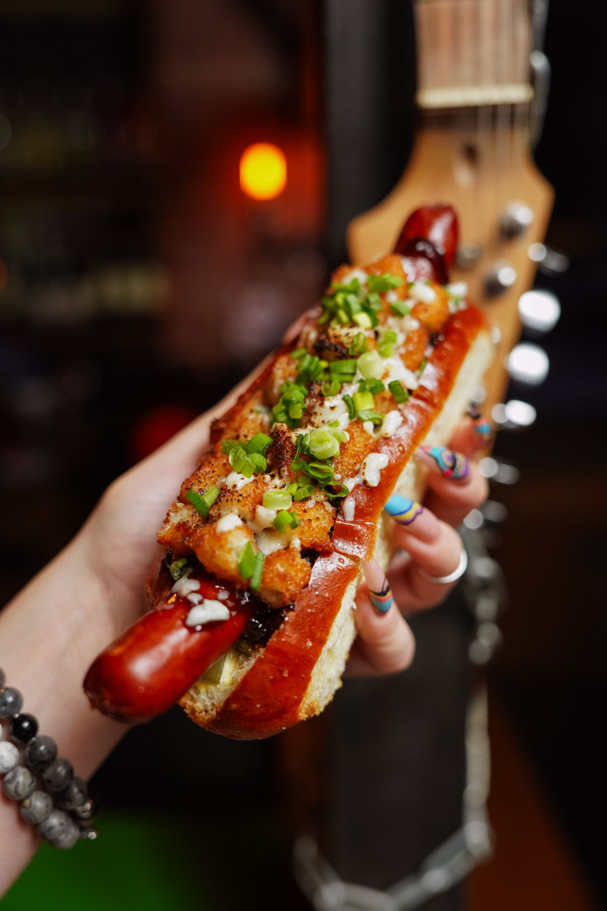
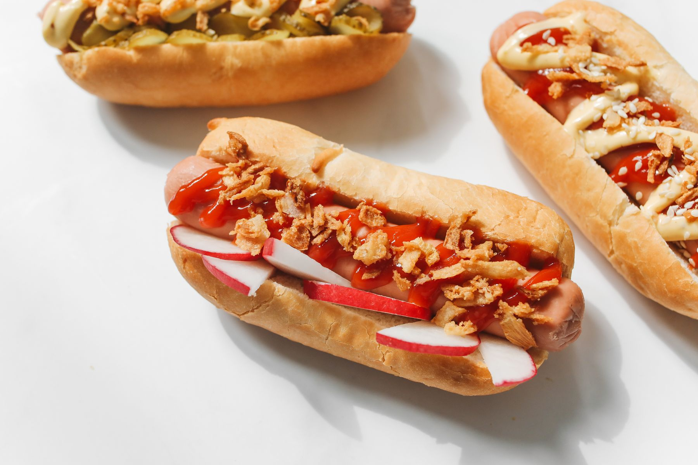
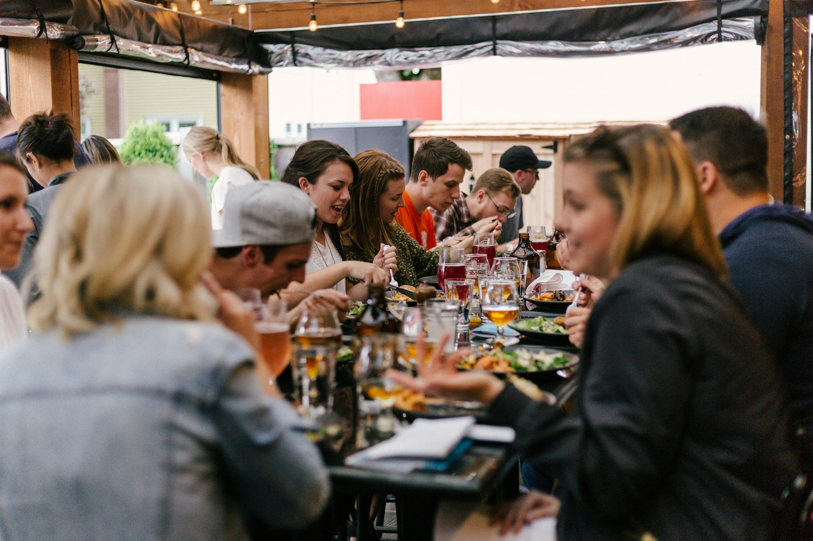

The box holds the dog.Not the person.
No label tells the whole story.
DogOnJohns is for people who resist easy categories—and extend that same grace to everyone else. The package contains the meal. It does not contain the person eating it.
A familiar pleasure, made with intention—and a reason to stay curious about the person beside you.

It means clarity. Restraint. Every ingredient has a job, and every choice can be explained.

DogOnJohns is for people who resist easy categories—and extend that same grace to everyone else. The package contains the meal. It does not contain the person eating it.

No forced networking. No debate stage. Just enough delight to make room for curiosity.
What is something you have changed your mind about?
I have spent much of my life being difficult to categorize.
Growing up on the north side of Minneapolis, Minnesota, and attending private school on scholarship taught me to move between very different worlds. It also taught me how much people who appear different often share.
DogOnJohns is a simple, joyful way to make room for that discovery.
A city built by people who challenged boundaries, made room and kept becoming. We are here to honor that history—and add another table to it.